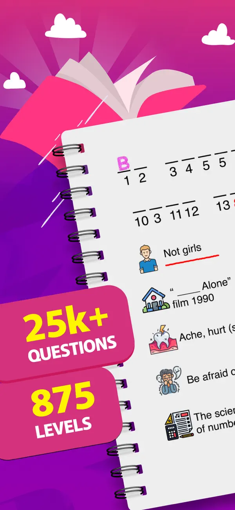
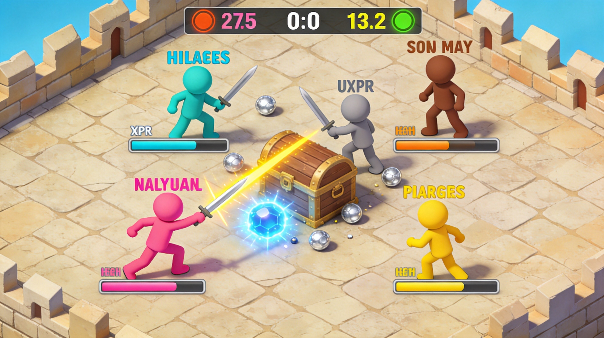
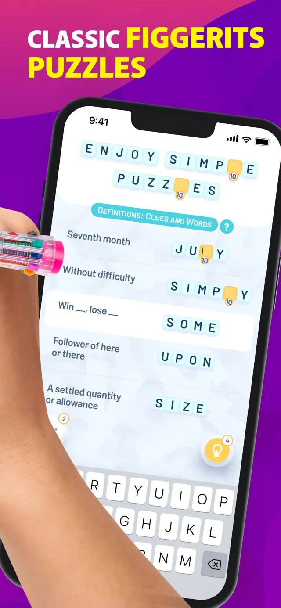

Introduction
BrosSwordz.io is a fast‑paced, browser‑based multiplayer sword battle arena where players choose from a roster of swords—ranging from a swift Katana to a heavy Greatsword—and fight in real‑time 1‑v‑1 or team matches. Unlike simple click‑to‑attack games, BrosSwordz.io emphasizes precise timing, positioning, and stamina management. Every swing has a distinct arc and recovery frames, and each sword offers unique combos and special abilities. The game’s vibrant pixel‑art arenas and responsive controls create a satisfying “feel” that keeps players coming back for more. Whether you enjoy out‑maneuvering opponents with a dual‑blade or smashing foes with a massive claymore, BrosSwordz.io delivers skill‑based combat that rewards practice and quick reflexes.
Getting Started

Getting Started 1. Open BrosSwordz.io in any modern browser—no download required. Click “Play” and select a server close to your region for minimal latency. 2. Choose a sword that fits your style. The Katana offers fast light slashes and a rapid dash; the Greatsword hits hard with a wide arc but has slower recovery; the Dual Daggers let you chain rapid combos at close range. 3. Once you spawn, the default controls are: • WASD or Arrow Keys – Move. • Mouse – Aim the direction of your swings. • Left‑Click – Perform a basic slash. • Right‑Click – Activate the sword’s special ability (e.g., a spinning whirlwind for the Greatsword). • Space – Dash (costs stamina). • Shift – Block (reduces incoming damage, also uses stamina). 4. The HUD shows your Health bar (red) and Stamina bar (blue). Keep an eye on stamina; over‑spamming attacks leaves you vulnerable. 5. Jump into a Free‑For‑All lobby to practice movement and timing, or join a Team Battle to learn coordination. The tutorial, available from the main menu, walks you through the basics of combos, blocking, and using the dash to evade.
Basic Tips
Basic Tips 1. Learn Your Sword’s Swing Arc – Each weapon has a distinct hitbox. The Katana’s slash is narrow and fast; swing it only at melee range to avoid whiffing. The Greatsword’s wide arc can catch two opponents but commits you to a slow recovery. 2. Manage Stamina – Every dash, block, and special costs stamina. If the bar empties, you’ll be stuck in a recovery animation. Alternate attack → dash → attack → dash, keeping at least one bar for emergencies. 3. Cancel Recovery with Dash – Press Space immediately after a heavy swing finishes to dash. This interrupts the recovery frames and repositions you before the opponent can counter. 4. Keep Moving and Change Elevation – Strafe side‑to‑side, jump on platforms, and use map obstacles to break line‑of‑sight. On the River map, hopping onto the central stone grants a height advantage. 5. Read Opponent Patterns – Watch if an enemy always blocks after a light attack. If they do, wait for the block then strike with a heavy slash; the block staggers them for a split second, giving you a free hit.
Advanced Strategies

Advanced Strategies 1. Prediction & Baiting – Force opponents to commit by feinting. Start a heavy slash, then cancel with a dash just before the swing lands. Opponents often try to block, leaving them open for a quick follow‑up light slash. Baiting works well in tight corridors of the Fortress map where dodging space is limited. 2. Sword Switching for Combo Flexibility – Each sword has a unique special ability and combo chain. Switch swords mid‑fight (press 1/2/3) to chain a fast Katana light slash into the Greatsword’s overhead slam, using dash momentum to close distance. This catches opponents off‑guard because they expect the slower Greatsword after a hit. 3. Map Control & High‑Ground Dominance – In River map, claim the central stone early; from there your dash‑cancel can cover both the bridge and the riverbank. Use cover like crates on the Warehouse map to break enemy line‑of‑sight, then burst out for a surprise attack. 4. Stamina Cycling for Sustained Pressure – Instead of fully depleting stamina, perform a 3‑hit combo, pause for a half‑second, then dash. This pattern keeps stamina above 30%, allowing pressure while preventing the opponent from capitalizing on a stamina‑less vulnerable moment.
Pro Tips

Pro Tips 1. Frame‑Perfect Cancels – Master the exact timing of dash cancel after a heavy swing (≈2 frames). This reduces your recovery to near zero, letting you chain into a light attack for a 2‑hit combo that most opponents cannot react to. 2. Perfect Block Timing – Block exactly 50 ms before an opponent’s hit lands. The game rewards a perfect block with a brief stun on the attacker, giving you a free heavy slash. 3. Ultimate Ability Baiting – Save your sword’s ultimate (e.g., the Greatsword’s spin) until an enemy is low on health and tries to retreat. Release it mid‑dash to secure the kill while avoiding return fire. 4. Map‑Specific Shortcuts – Learn the hidden jump paths on each map, such as the vertical wall‑jump on the Castle map that shortcuts the main stairwell, granting a surprise flank on opponents fighting below.
Conclusion
Conclusion BrosSwordz.io blends fast reflexes, strategic positioning, and deep sword mechanics into a highly replayable arena. Whether you prefer the Katana’s swift strikes, the Greatsword’s crushing power, or the dual‑blade’s relentless combos, the game offers a skill ceiling that rewards practice. Jump in, experiment with each weapon, and climb the leaderboards by mastering timing, stamina control, and map awareness. The arena awaits—grab your sword and prove you’re the best.